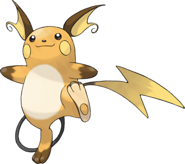

Raichu est un Pokémon ressemblant à une souris. Son corps est orange avec un ventre blanc. Il possède une longue queue noire avec au bout un éclair jaune. Ses joues sont jaunes, ses pattes sont marron ; il n'a pas de doigt visible sur les pattes avant, mais en a trois les pattes arrière qui sont blanches côté paume tandis qu'un cercle jaune fait penser à un talon. Ses oreilles sont grandes, jaunes à l'intérieur et marron à l'extérieur.